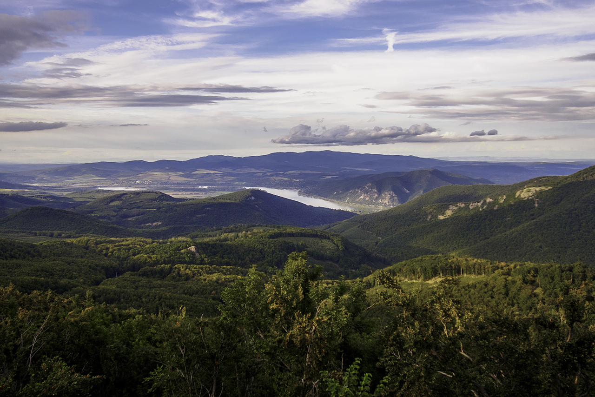

Dobogókő
A Dobogó-kő kiránduló- és üdülőhely, a Visegrádi-hegység legmagasabb hegye, tengerszint feletti magassága 700 méter. A hegycsúcson húzódik Komárom-Esztergom vármegye (Dömös) és Pest vármegye (Pilisszentkereszt) határa. A 19. század végen vált népszerű úticéllá.